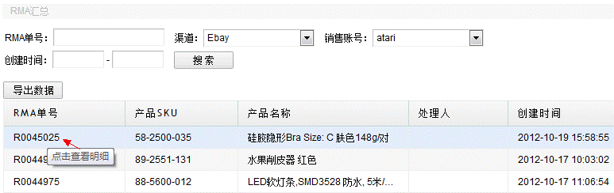
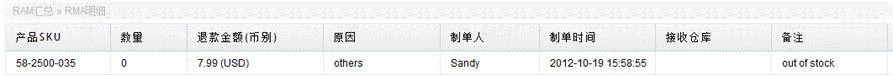

RMA单号的数字与出库订单一样，只是首字母是R大写，出库订单号是x小写开头。
通过选择不同的渠道和账号按钮，查询一定时期内的RMA明细报表，界面以下，以渠道“eBay”的账号atari为例，显示如下，可以按导出数据按钮，将RMA数据导出来，RMA汇总表显示了该订单一共发生多少退款，多少退货，重发多少。

注意：根据RMA单号只是查询到出库订单，下的退货单和退款单，如其他条件查询，可以查询所有退货单和退款单信息。
如上图，RMA单号R0045025，必存在单号为x0045025的出库单，可以出库订单的已出库查询到，点击RMA单号，可以进入RMA的明细页面，查看退款退货明细，如每次退款金额或退货数量，制单人，处理时间，如果是退货的，还显示接收仓库，是否已经入库等。
